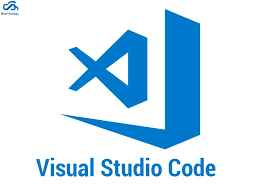
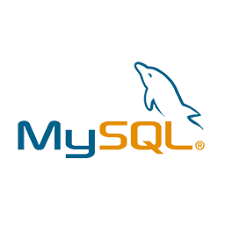
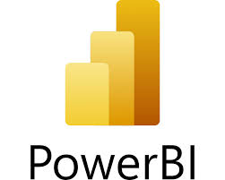
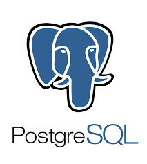

Outils & Logiciels







Je suis développeuse spécialisée dans la conception d’applications et la gestion de données. À travers mes formations et mes expériences professionnelles, j’ai acquis des compétences solides en développement web, bases de données et création d’outils décisionnels. Ce portfolio présente mon parcours académique, mes expériences et mes projets.




Data mining, Big Data, Machine Learning, SQL, Python, R
Développement web, bases de données, cybersécurité